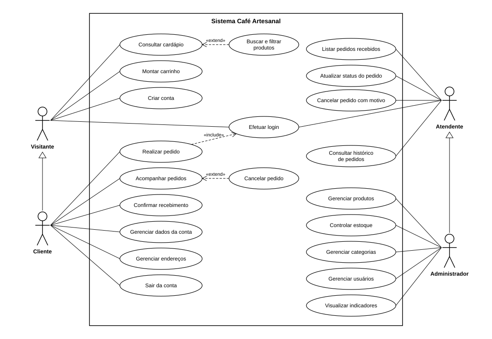
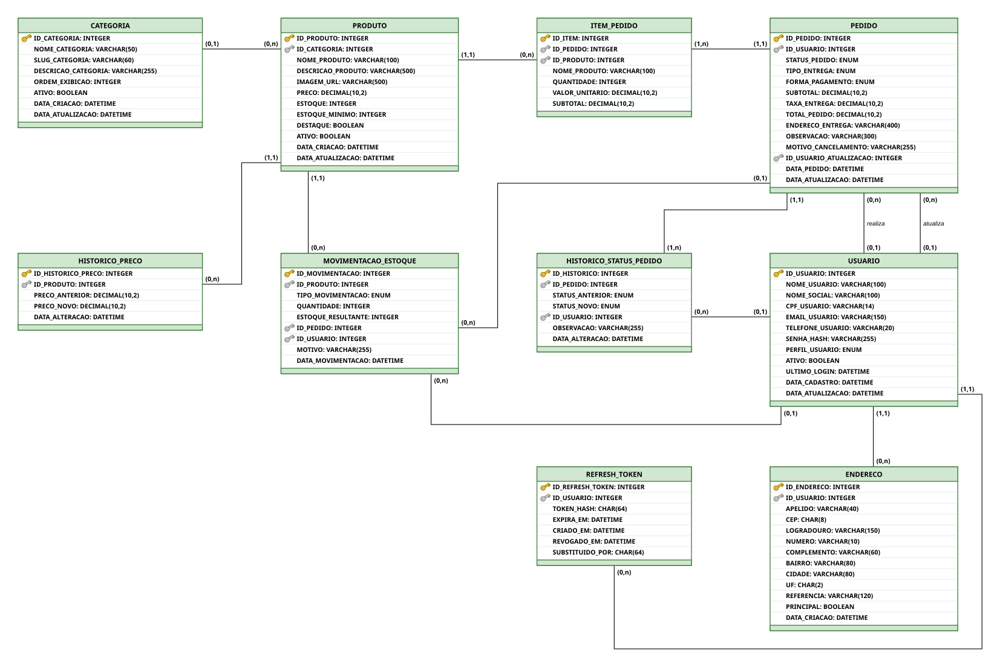
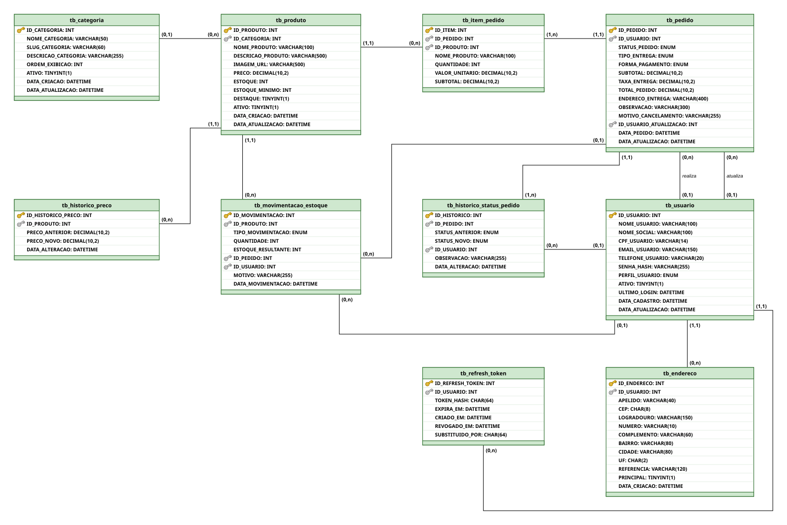
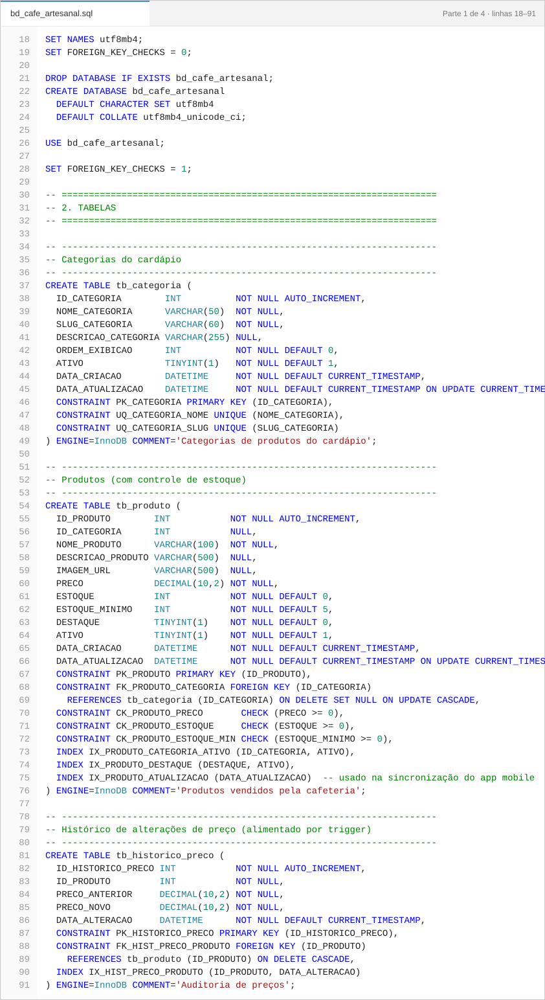
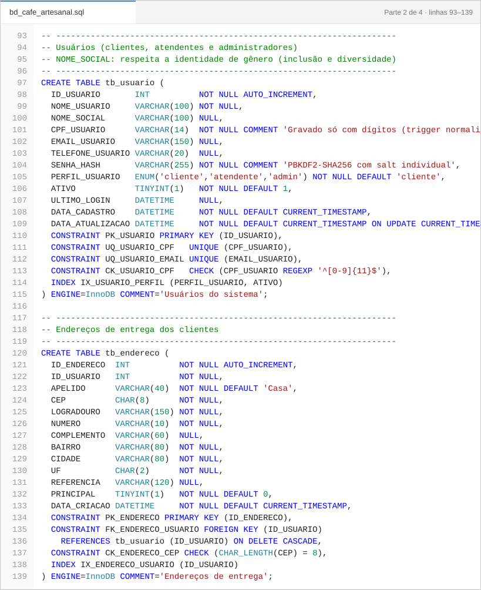
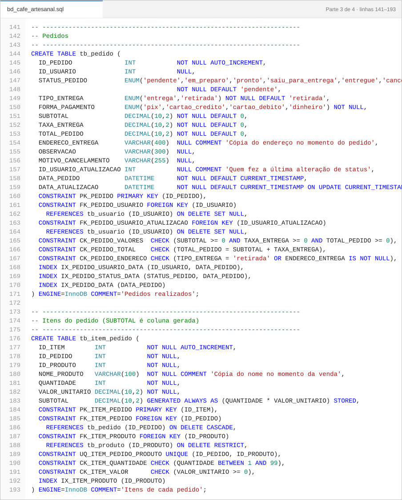
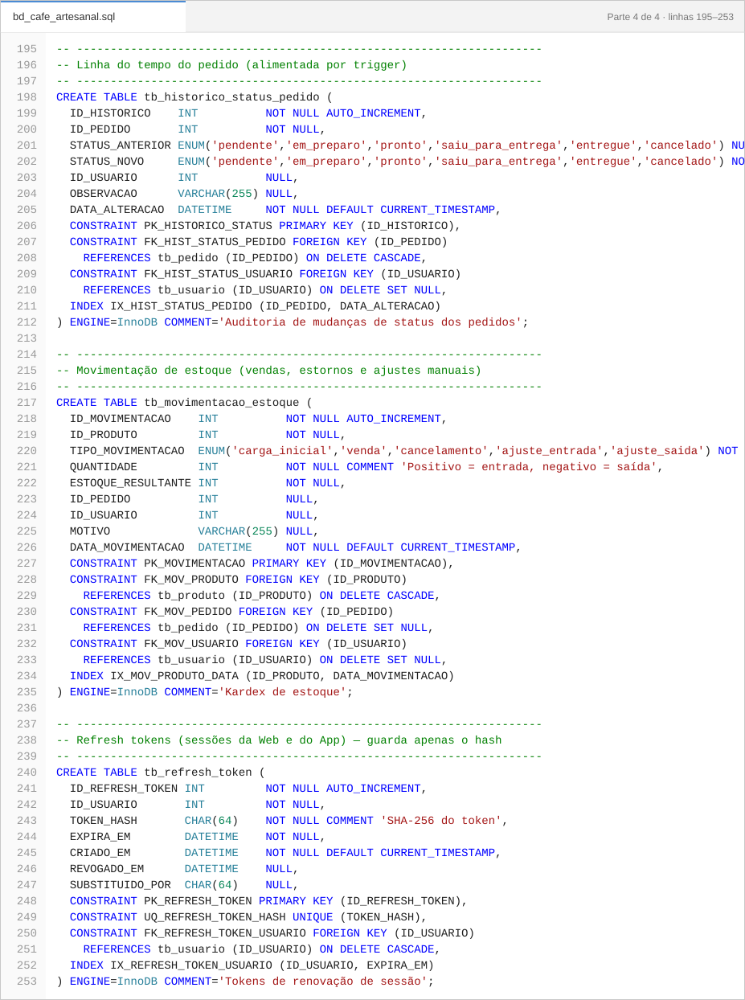

Figura 1: Diagrama de caso de uso do sistema Café Artesanal

Fonte: Dos autores, 2026.
Figura 2: Modelo lógico do banco de dados do sistema Café Artesanal

Fonte: Dos autores, 2026.
Figura 3: Modelo físico do banco de dados do sistema Café Artesanal (MariaDB)

Fonte: Dos autores, 2026.
Figura 4: Modelo físico em SQL – criação do banco e das tabelas de categorias, produtos e histórico de preços

Fonte: Dos autores, 2026.
Figura 5: Modelo físico em SQL – tabelas de usuários e endereços

Fonte: Dos autores, 2026.
Figura 6: Modelo físico em SQL – tabelas de pedidos e itens do pedido

Fonte: Dos autores, 2026.
Figura 7: Modelo físico em SQL – histórico de status, movimentação de estoque e tokens de sessão

Fonte: Dos autores, 2026.